Screenshots need to be updated
A video tutorial for this feature is available at the tutorials section.
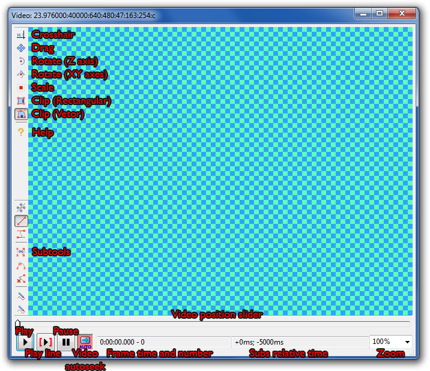
Play the video and, starting at the currently displayed frame. See Video for comments on playing video in Aegisub.
Play the video starting at the first frame of the currently active line, stopping at the end of the line.
Toggles automatic seeking of the video to the first frame of a line whenever a new line is selected.
Displays the current frame number and the start time of the frame. If the currently displayed frame is a keyframe, this box has a green background.
Note that it is normal for the "Set start of selected subtitles to current video frame" (Ctrl-3) and "Set end of selected subtitles to current video frame" (Ctrl-4) to set the time to something different than what is displayed here, as setting times to exactly the frame's time tends to result in rounding errors.
Is the main toolbar actually documented anywhere?
Displays the time to the start and end time of the active subtitle line. This is mostly useful for override tags which take relative times, such as \t and \fad.
Displays and allows changing the current video zoom.
Used to seek the video. Holding shift while dragging the thumb snaps to keyframes. By default, left/right seek forward/backward one frame; alt-left/right seek forward/backward 10 frames; shift-left/right seek forward/backwards one keyframe. The slider can be focused without accidentally seeking by right-clicking it or pressing Ctrl-Space. If the slider already has focus, Ctrl-Space will return keyboard focus to the control that last had it.
You can right click to bring a context menu with other options:
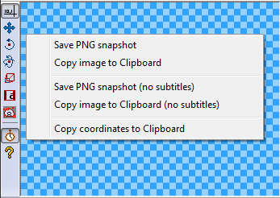
There are currently seven different visual typesetting tools: crosshair, drag, rotate on z axis, rotate on xy axes, scale, rectangular clip and vector clip.
This is the standard mode. Hovering the mouse over the video will show the script coordinates under the cursor, as well as a crosshair indicating the exact point that you are looking at. Holding down shift will make it instead show the distance from the bottom-right corner. Double clicking a point will position the current line (using the \pos tag) on that position. If alt is held down while double-clicking, all other selected lines will be shifted by the same distance as the active line, including lines not visible on the current frame.
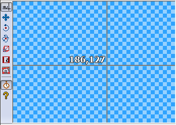
The drag tool has two modes. You can toggle between them by clicking the button on the auxiliary visual typesetting bar.
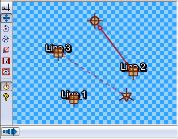
On the positioning mode, you can simply click-and-drag subtitles across the video surface by dragging their anchor (the square). They will be positioned where you release them with the \pos command.
On the movement mode, there is another anchor, the end-of-movement anchor, which is represented by a circle. There will be an arrow pointing from the start-of-movement to the end-of-movement anchor. In order to set the times where the movement will start or end, move the corresponding anchor on the time where you want the subtitle to be at that anchor. For example, if you want movement to start at 5000 milliseconds after the start of the line, seek the video to 5000 milliseconds after the start of the line, and drag the start anchor there. The same goes for the end-of-movement anchor.
If your line has an origin point specified, you will see a third anchor, represented by a triangle, connected to the square anchor by a dotted line. You can also drag this to affect the origin position. This same anchor will be visible in the two rotation tools.
If shift is held down while dragging an anchor, the drag will be limited to only altering the X or Y coordinate of the anchor (whichever would be changed more).
Multiple anchors can be selected at once by holding down ctrl and clicking on the anchors which you want to add or remove from the selection. All selected anchors are moved when one is dragged.
Double-clicking on a spot with no anchors will move the active anchor to that position, similarly to double-clicking in the crosshair tool. If alt is held down, all other selected anchors are shifted relative to the active anchor.
On this mode, you will see a circle centered around the subtitle's pivot (either it's position, or the origin point, if defined). The circle is surrounded by 6 arcs that help mark and measure angles.
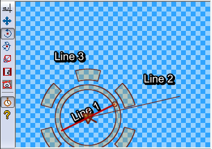
There are two functionalities in this mode. You can either drag the origin point (the triangle at the center of the circle) to move it (and insert a \org tag, if none exists), or you can click and drag anywhere else to rotate the line.
You will notice that there is a line connecting the center of the circle to the mouse cursor. When you click and drag, the subtitle line rotate following that line, that is, you must rotate the cursor around the center to rotate the line. Just release the mouse to finish positioning. You can also use the ctrl key to limit the rotation to increments of 30 degrees.
If the origin is far from the center, you will see a little helper line indicating where the center of the subtitles will be positioned as you rotate it.
If multiple lines are selected, all selected lines are set to the new rotation (and not rotated relative to each other as in the drag and crosshair tools).
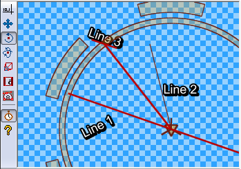
This mode is somewhat similar to the previous mode, although there are a few important differences. Since this rotates on the two screen axes, the rotation is three-dimensional, and therefore harder to visualize.
In order to make this easier, there is a grid representing the plane in which the subtitles lie, and you rotate that grid. There are also three arrows pointing from the center, indicating the direction and orientation of the three axes.
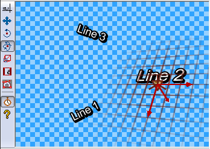
To use this tool, simply hold the mouse button anywhere on the screen and move it. As you move it left and right, it will rotate the line on the Y axis, and as you move it up and down, it will rotate the line on the X axis.
If you hold down the shift key while rotating, the rotation will be limited to only one of the two axes - whichever has the greatest movement. If you hold down the ctrl key, rotation will happen in steps of 30 degrees.
If multiple lines are selected, all selected lines are set to the new rotation (and not rotated relative to each other as in the drag and crosshair tools).
As with the Z rotation tool, you can also drag the origin anchor here.
This is the simplest tool, and allows you to scale subtitles on the X and Y axes. It will show one bar for each axis, showing not only the 100% size, but also the current scale.
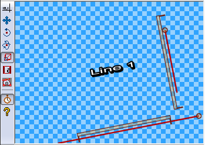
To use this tool, simply hold down the mouse button and drag the mouse up and down (to scale on the Y axis) or left and right (to scale on the X axis). You can hold down the shift key to limit scaling to the axis where the biggest change happened, and ctrl to limit it to increments of 25%.
The rectangular clip tool allows you to clip the subtitles so that nothing
OUTSIDE an axis-aligned rectangle can be displayed (in essence, the
\clip(x1,y1,x2,y2) tag).
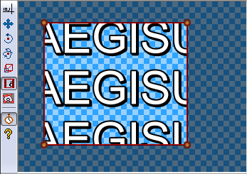
There are two ways to use this tool. You can either click and grab one of the four vertices of the rectangle, to resize an already-existing clip, or you can click-and-drag in empty space to create a new rectangle from scratch. The areas that will be invisible will be darkened.
Similarly to the last tool, the vectorial clip tool allows you to draw an area, so that nothing outside it will be rendered. The difference, however, is that this area can have any arbitrary shape defined by a path of lines and bézier curves.
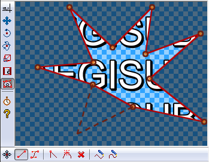
This mode has 8 sub-tools:
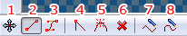
As with the drag tool, multiple control points can be selected at one by ctrl-clicking on the anchors to be added or removed from the selection. By default all control points are selected; to deselect them all click on a blank spot when in Drag mode. Multiple control points can be selected at once by clicking and dragging in move mode to perform a box selection.